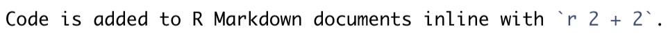

{kind=link}
Call:
lm(formula = dist ~ speed, data = cars)
Coefficients:
(Intercept) speed
-17.579 3.932 6 Reproducible Research with Quarto
6.1 Motivation
There are many problems worth avoiding in an analysis:
- Copying-and-pasting, transposing, and manual repetition
- Out-of-sequence documents
- Parallel documents (a script and a narrative Word doc)
- Code written for computers that is tough to parse by humans
Not convinced? Maybe we just want to make cool stuff.
6.2 Literate (Statistical) Programming
According to Donald Knuth:
Let us change our traditional attitude to the construction of programs: Instead of imagining that our main task is to instruct a computer what to do, let us concentrate rather on explaining to human beings what we want a computer to do. ~ Knuth (1984).
6.3 Example
We used a linear model because there is reason to believe that the population model is linear. The observations are independent and the errors are independently and identically distributed with an approximately normal distribution.
An increase in travel speed of one mile per hour is associated with a 3.93 foot increase in stopping distance on average.
6.4 Quarto
Quarto is a literate statistical programming tool for R, Julia, Python, JavaScript, and more. It was released by Posit in 2022. Quarto is an important tool for reproducible research. It combines narrative text with styles, code, and the output of code and can be used to create many types of documents including PDFs, html websites, slides, and more.
Quarto builds on the success of R Markdown. In fact, Quarto will Render R Markdown (.Rmd) documents without any edits or changes.
Sweave is a competing framework that it is out-of-date, and Jupyter (Julia, Python, and R) is a competing framework that is popular for Python but has not caught on for R.
According to Wickham and Grolemund (2017) Chapter 27, there are three main reasons to use R Markdown (they hold for Quarto) :
- “For communicating to decision makers, who want to focus on the conclusions, not the code behind the analysis.”
- “For collaborating with other data scientists (including future you!), who are interested in both your conclusions, and how you reached them (i.e. the code).”
- “As an environment in which to do data science, as a modern day lab notebook where you can capture not only what you did, but also what you were thinking.” s Quarto uses
Quarto calls library(knitr) and “knits” .qmd (Quarto files) into .md (Markdown files), which Pandoc then converts into any specified output type. Quarto and library(knitr) don’t need to be explicitly loaded and the entire process is handled by clicking the “Render” button in RStudio.

Source: Quarto website
Clicking the “Render” button starts this process.
Quarto, library(knitr), and Pandoc are all installed with RStudio. The only additional software you will need is a LaTeX distribution. Follow these instructions to install library(tinytex) if you want to make PDF documents.
Warning
In the RStudio IDE (or in VSCode), clicking the Render button is analogous to running quarto preview in the terminal. This is different from another quarto command line function quarto render2. quarto preview will cause the page to re-render and update. However, if you use Quarto to build a HTML-based book (like this one) or a website, by default, running quarto preview will not incorporate updated global options (often specified in _quarto.yml) or external files. To redeploy a website and/or incorporate those changes, run quarto render.
You can read more about this distinction on the Quarto documentation.
6.5 Three Ingredients in a .qmd
- YAML header
- Markdown text
- Code chunks
6.5.1 1. YAML header
YAML stands for “yet another markup language.” The YAML header contains meta information about the document including output type, document settings, and parameters that can be passed to the document. The YAML header starts with --- and ends with ---.
Here is the simplest YAML header for a PDF document:
---
format: html
---YAML headers can contain many output specific settings. This YAML header creates an HTML document with code folding and a floating table of contents:
---
format:
html:
code-fold: true
toc: true
--- 6.5.2 2. Markdown text
Markdown is a shortcut for HyperText Markup Language (HTML). Essentially, simple meta characters corresponding to formatting are added to plain text.
Titles and subtitltes
------------------------------------------------------------
# Title 1
## Title 2
### Title 3
Text formatting
------------------------------------------------------------
*italic*
**bold**
`code`
Lists
------------------------------------------------------------
* Bulleted list item 1
* Item 2
* Item 2a
* Item 2b
1. Item 1
2. Item 2
Links and images
------------------------------------------------------------
[text](http://link.com)6.5.3 3. Code chunks

More frequently, code is added in code chunks:
The first argument inline or in a code chunk is the language engine. Most commonly, this will just be a lower case r. knitr allows for many different language engines:
- R
- Julia
- Python
- SQL
- Bash
- Rcpp
- Stan
- Javascript
- CSS
Quarto has a rich set of options that go inside of the chunks and control the behavior of Quarto.
In this case, eval makes the code not run. Other chunk-specific settings can be added inside the brackets. Here3 are the most important options:
| Option | Effect |
|---|---|
| echo: false | Hides code in output |
| eval: false | Turns off evaluation |
| output: false | Hides code output |
| warning: false | Turns off warnings |
| message: false | Turns off messages |
| fig-height: 8 | Changes figure width in inches4 |
| fig-width: 8 | Changes figure height in inches5 |
6.6 Applications
6.6.1 PDF documents
---
format: pdf
---- Any documents intended to be published or printed out. For example, this blog details how Cameron Patrick wrote their PhD thesis in Quarto.
6.6.2 html documents
---
format: html
---6.6.3 GitHub README
---
format: gfm
---6.6.4 Bookdown
Bookdown is an R package by Yihui Xie for authoring books in R Markdown. Many books, including the first edition of R for Data Science (Wickham and Grolemund (2017)), have been written in Quarto.
Quarto book replaces bookdown. It is oriented around Quarto projects. The second edition of R for Data Science (Wickham, Çetinkaya-Rundel, and Grolemund (2023)) was written in Quarto.
6.6.5 Blogdown
Blogdown is an R package by Yihui Xie for creating and managing a blog in R Markdown. Up & Running with blogdown in 2021 by Alison Hill is a great tutorial for getting started with Blogdown.
There is no good Quarto replacement right now.
6.6.6 Microsoft Word and Microsoft PowerPoint
It is possible to write to Word and PowerPoint. In general, We’ve found the functionality to be limited, and it is difficult to match institutional branding standards.
6.6.7 Slides
---
format:
revealjs:
css: styles.css
incremental: true
reveal_options:
slideNumber: true
previewLinks: true
---- Despite the challenge of rendering to Powerpoint, Quarto can be used effectively to create presentations. One of the authors of this book used Quarto to create a presentation about iterated fact sheet development which, coincidentally, also used Quarto!
6.6.8 Fact sheets and fact pages
An alternative to rendering a Quarto document with the Render button is to use the quarto::render() function. This allows for iterating the rendering of documents which is particularly useful for the development of fact sheets and fact pages. The next chapter of the book expands on this use case.
- The Urban Institute State and Local Finance Initiative creates State Fiscal Briefs by iterating R Markdown documents.
- Data@Urban
6.7 Suggestions
6.8 Resources
Pandoc is free software that converts documents between markup formats. For example, Pandoc can convert files to and from markdown, LaTeX, jupyter notebook (ipynb), and Microsoft Word (.docx) formats, among many others. You can see a comprehensive list of files Pandoc can convert on their About Page.↩︎
The
quarto::quarto_render()function, which we describe below, wraps the bashquarto renderfunction.↩︎This table was typed as Markdown code. But sometimes it is easier to use a code chunk to create and print a table. Pipe any data frame into
knitr::kable()to create a table that will be formatted in the output of a rendered Quarto document.↩︎The default dimensions for figures change based on the output format. Visit here to learn more. Default settings for the entire document can be changed in the YAML header with the
executeoption:execute: warning: false↩︎
The default dimensions for figures change based on the output format. Visit here to learn more. Default settings for the entire document can be changed in the YAML header with the
executeoption:execute: warning: false↩︎